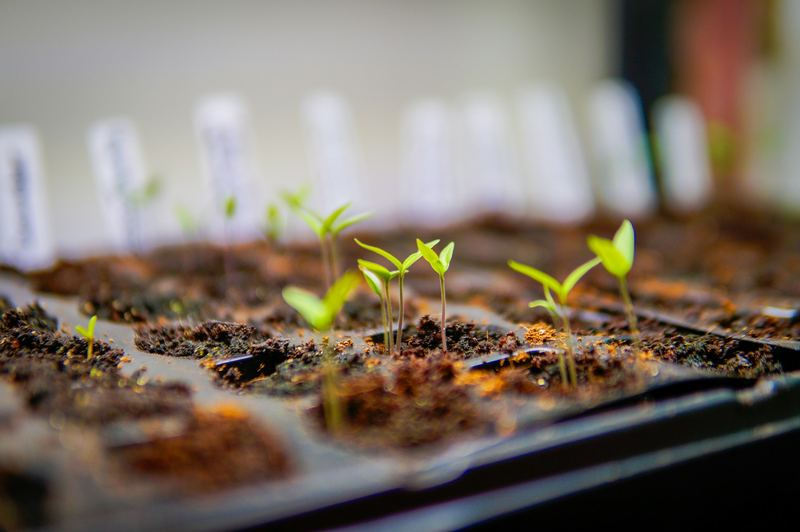

Kalendář prodeje
Prodávám ve dvou sezónách. Uložte si začátek té příští do kalendáře v telefonu, ať Vám neuteče.

- Ledenmimo sezónu
- Únormimo sezónu
- Březenmimo sezónu
- Dubenod poloviny měsíce sazenice zeleniny, balkonové a záhonové květiny
- Květensazenice zeleniny, balkonové a záhonové květiny
- Červendo poloviny měsíce sazenice a květiny
- Červenecmimo sezónu
- Srpenmimo sezónu
- Zářímacešky a chryzantémy
- Říjenmacešky a chryzantémy
- Listopadmacešky a chryzantémy
- Prosinecmimo sezónu